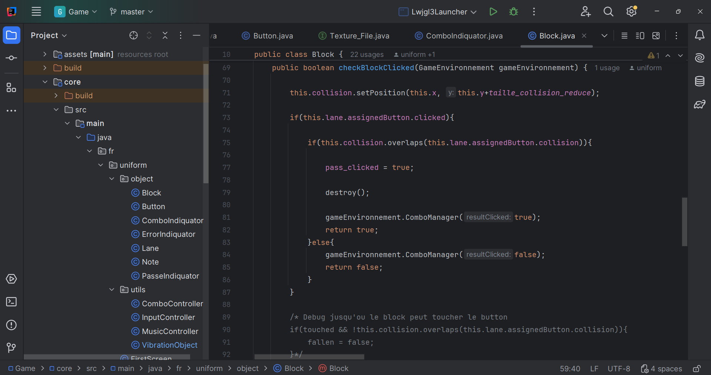
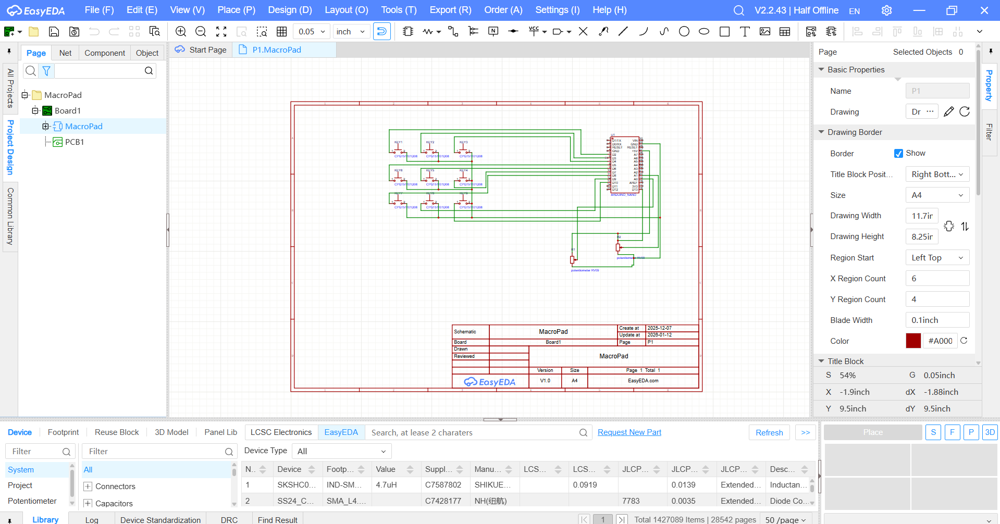

PROJETS
Informatique
Mes projets sont diverse et varié dans beaucoup de domaine lié presque toujours à l'informatique

Musique
J'ai commencé la musique à l'âge de 5 ans avec des pratiques musicales, puis j'ai fait 12 ans de conservatoire où j'ai pratiqué des percussions, notamment la batterie et le xylophone. C'est vers l'âge de 12 ans que j'ai essayé de commencer à composer des musiques.

Electronique
Mes projets sont diverse et varié dans beaucoup de domaine lié presque toujours à l'informatique

Modélisation 3D
J'ai appris au fil du temps la maîtrise de nombreux logiciels de 3D, industriels ou artistiques.

Montage
J'ai toujours beaucoup aimé le montage vidéo et photo et j'ai au fil des années appris à maîtriser différents logiciels de ce domaine.